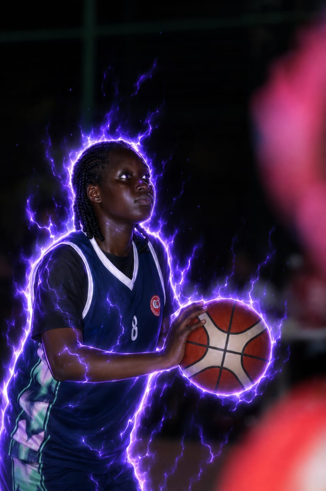
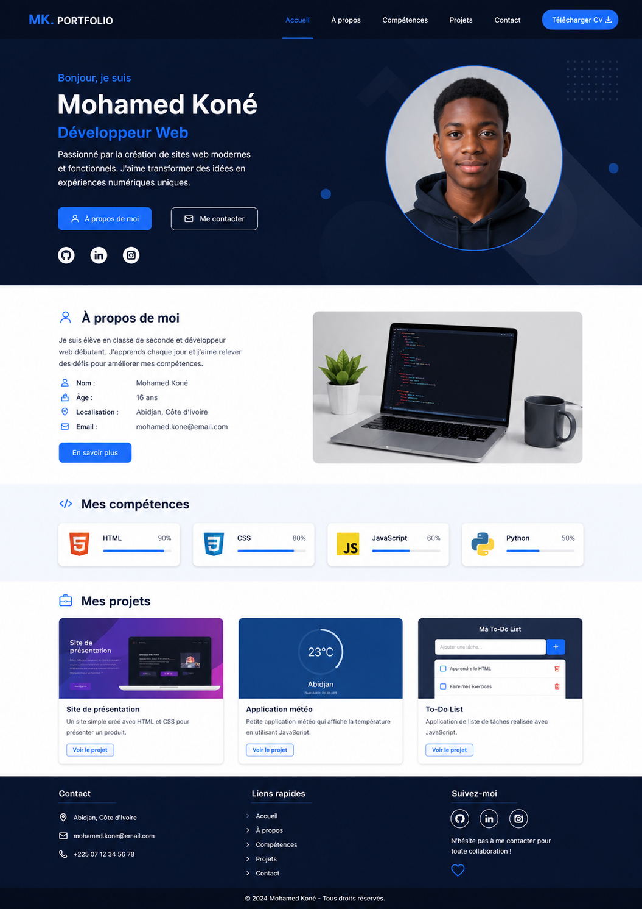

Bonjour, je suis
AKOUETE Kris
Développeur Web Débutant
Passionné par la création de sites web modernes et fonctionnels. J'aime transformer des idées en expériences numériques uniques.

Bonjour, je suis
Développeur Web Débutant
Passionné par la création de sites web modernes et fonctionnels. J'aime transformer des idées en expériences numériques uniques.
Je suis élève en classe de seconde et développeur web débutant. J'apprends chaque jour et j'aime relever des défis pour améliorer mes compétences.


23°C
Lomé
Ensoleillé · Togo
Petite application météo qui affiche la température en utilisant JavaScript.
Voir le projetMa To-Do List